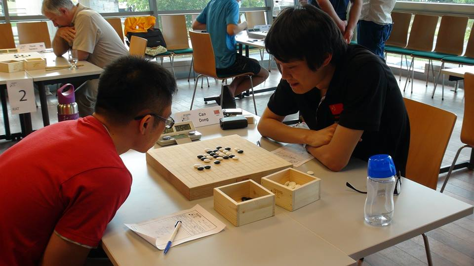

兰志仁终结坦克连胜 汪清清只为盘面战斗
#1 兰志仁终结坦克连胜 汪清清只为盘面战斗 作者：小丸.net 发表时间：2013-8-12 8:59:08
在今天凌晨刚刚结束了第13届世锦赛AT的比赛中，中国棋手兰志仁终结了爱沙尼亚棋手坦克的疯狂连胜，积3.5分，为保组之战再立新功。而中国女将汪清清再次遗憾负于苏切科夫和大角友希，失去了最后保级的可能。但是从清清的棋盘上来看，都进攻得十分出色，只是在一些细节的处理上有失水准。这应该是和男女棋手的棋风有关，汪清清虽然是国内女子棋手的佼佼者，但在正式比赛却鲜有与男性棋手对战，这也决定了在世锦赛赛场上并不出色的结果。中国的另外一名棋手曹冬昨天终于一扫前几轮的阴霾，迎来了第一个二连胜，积3分名列第8。

此时的积分表，爱沙尼亚坦克仍然以6.5的高分排名第一，俄罗斯的苏切科夫排名第2积6分，中华台北棋手陈科瀚以5分排名积分表第3.
世锦赛今天将进行第8，第九轮的比赛，相对曹冬来说，今天是拿分的好机会，对手分别是Salnikov、Aivo，本届比赛AIVO的比赛并不完全出色，而兰志仁今天的对手是苏切科夫和大角友希，要取得胜利十分困难，汪清清的对手是Epifanov、Salnikov相对拿分比较容易。坦克将在第8轮迎战黑马小马丁，接着坦克将在第9轮在日本棋手冈部宽身上寻求得分。
今天下午14:15(北京时间)，爱五子棋网将对第八轮进行直播，当晚20:00将直播第九轮。
昨天观看比赛的朋友已经很多，renju.net有几分钟处理瘫痪状态，因此，在此建议请大家尽量通过爱五子棋网的直播贴和棋谱库观看直播，把renju.net的通道留给我们的直播员，因为一旦renju.net这个官方平台出问题，除了在当地不能传棋谱外，我们更不能看到满意的直播。在此代表直播团队向各位奋战在观赛一线的朋友表示十分感谢。
［此帖子已被 小丸.net 在 2013-8-12 9:56:39 编辑过］
［ 与郎共五同学于 2013-8-12 10:38:54 时花20金币送鲜花一朵］
［ 与郎共五同学于 2013-8-12 10:38:54 时花20金币送鲜花一朵］
#2 Re:兰志仁终结坦克连胜 汪清清只为盘面战斗 作者：屏蔽 发表时间：2013-8-12 9:04:26
坦克打苏切是第十轮吧……#3 Re:兰志仁终结坦克连胜 汪清清只为盘面战斗 作者：小丸.net 发表时间：2013-8-12 9:11:41
啊，我把这个搞错了，该打该打。。。。。#4 Re:兰志仁终结坦克连胜 汪清清只为盘面战斗 作者：伤情路 发表时间：2013-8-12 9:24:45
只为盘面战斗...#5 Re:兰志仁终结坦克连胜 汪清清只为盘面战斗 作者：没事摆石子玩 发表时间：2013-8-12 9:44:44
汪清清对大角那盘完全变成了防守型得 怎能不败 大角随便套几个形状就简单必了。。苏切那盘苏切还是太阴了，34属于偷袭。。。35直接死了#6 Re:兰志仁终结坦克连胜 汪清清只为盘面战斗 作者：继续沉醉 发表时间：2013-8-12 9:51:02
赢了也出色，输了也出色，外国的AIVO积分比咱高但就是不出色，咱们无论如何也是出色。#7 Re:兰志仁终结坦克连胜 汪清清只为盘面战斗 作者：如火流年 发表时间：2013-8-12 9:58:27
汪对苏切，34这个走法有必要吗？34的时候为啥不直接走36，38？［此帖子已被 如火流年 在 2013-8-12 9:58:59 编辑过］
#8 Re:兰志仁终结坦克连胜 汪清清只为盘面战斗 作者：没事摆石子玩 发表时间：2013-8-12 10:12:04
当然有必要 直接那么攻是没有必胜得白棋#9 Re:兰志仁终结坦克连胜 汪清清只为盘面战斗 作者：没事摆石子玩 发表时间：2013-8-12 10:20:36
34提前挡了黑一个眠3 未来黑可以形成得VCF不存在了 是一种补杀#10 Re:兰志仁终结坦克连胜 汪清清只为盘面战斗 作者：屏蔽 发表时间：2013-8-12 11:52:53
白棋直接走36、38的话黑棋有反击 所以sushkov选择哪个34
然后当时sushkov时间只剩一分钟了 汪清清觉得多做几个冲四怎么着都能赢了 于是就走了那个35……
#11 Re:兰志仁终结坦克连胜 汪清清只为盘面战斗 作者：一休哥 发表时间：2013-8-12 13:59:44
李一正解#12 Re:兰志仁终结坦克连胜 汪清清只为盘面战斗 作者：怪 发表时间：2013-8-12 15:57:16
输的应该，随手棋下多了吧，形成心理习惯了。
#13 Re:兰志仁终结坦克连胜 汪清清只为盘面战斗 作者：幾 发表时间：2013-8-12 22:21:14
汪清清风格像泰森